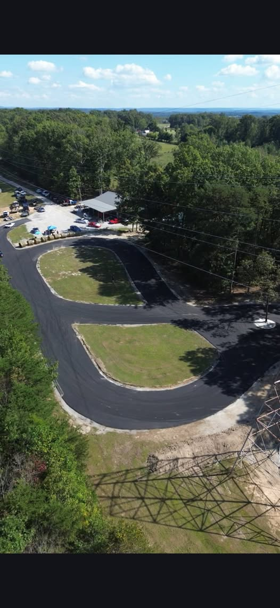

Winters Drift Track
Operating under Winters Automotive, Winters Drift Track is a small, but fun, track for beginners to the most experienced drivers. The layout provides many different paths to be taken. The first test day this past weekend was a huge success and beyond fun, showing that the sky is the limit with possibilities on the track.
Future Plans
I am not exactly sure of a set schedule for the tracks future, but I do know events will probably be held regularly along with open track days. The track itself will only have improvements made over time as we learn what is needed to make everyones experience better!